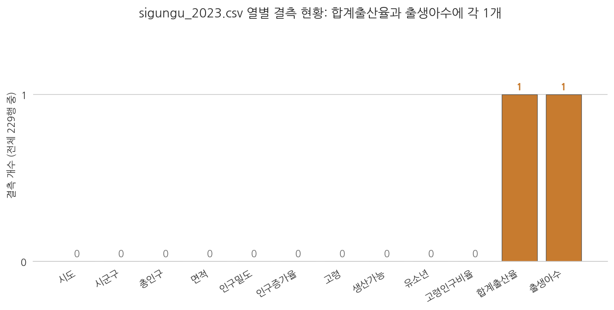
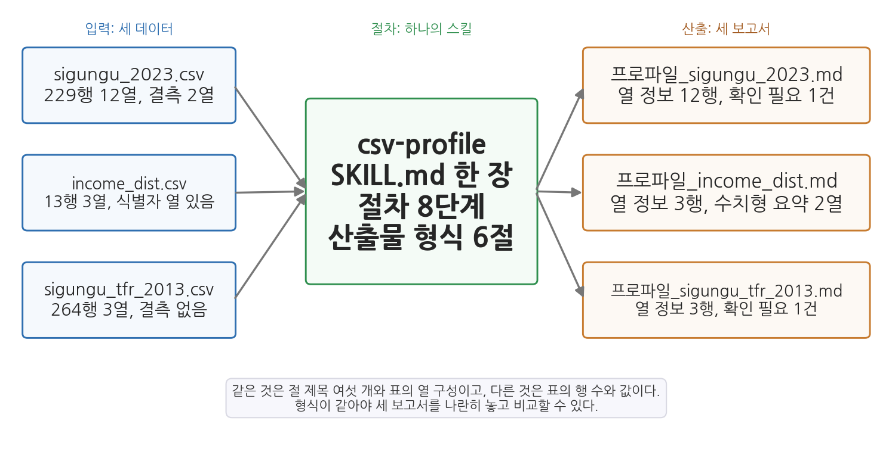
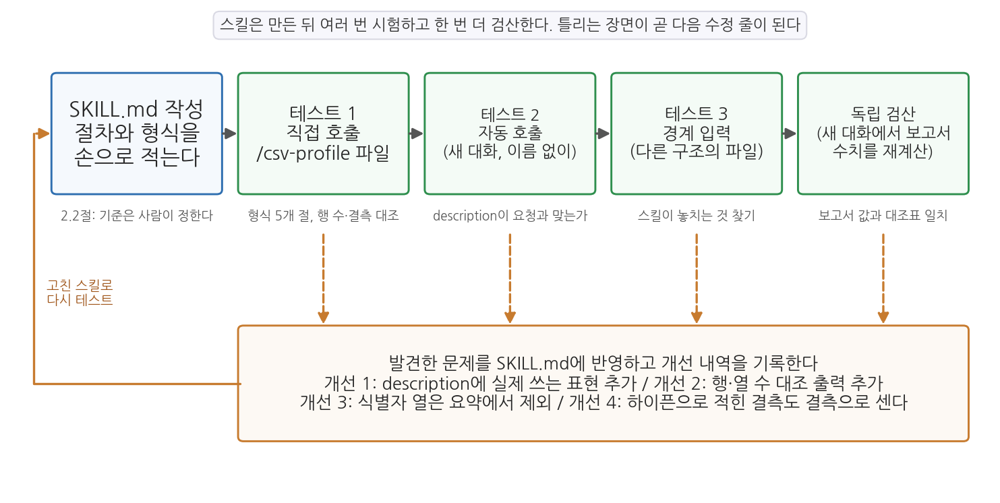

4주차 2회차. 나만의 첫 Skill 만들기
최종 수정: 2026-09-03 · 이 교재는 학기 중에도 계속 업데이트됩니다
이 실습에서 하는 것
1회차에서 Skill(반복 절차의 표준화)을 원리로 배웠다. 오늘은 직접 만들어 본다. 재료는 앞으로 학기 내내 반복하게 될 작업, 곧 데이터 프로파일링이다. 새 데이터를 받으면 분석보다 먼저 신상명세(행·열·자료형·결측·요약통계)를 확인해야 하는데, 이 진단 절차가 전형적인 반복 작업이다.
진행은 세 단계다. 전반부에서는 프로파일링을 일회성 지시문으로 한 번 수행하며 절차 자체를 익힌다. 중반부에서는 그 절차를 SKILL.md 파일로 저장해 슬래시 커맨드 한 줄로 실행되게 만들고, 직접 호출과 자동 호출을 시험하며, 절차의 한 줄을 일부러 빼 보면서 어느 문장이 보고서의 어느 부분을 만드는지 확인한다. 후반부에서는 스킬 산출물에 검증을 내장하고, 구조가 다른 데이터를 두 개 더 넣어 스킬이 놓치는 것을 찾아내고, 결측이 빈칸이 아니라 하이픈으로 적힌 사본에서 스킬이 조용히 틀리는 장면을 확인한 뒤, 새 대화에서 보고서의 수치를 독립적으로 검산한다. 한 번은 손으로, 두 번째부터는 스킬로, 그리고 스킬이 만든 것도 검증한다. 이것이 오늘의 요지다.
이 실습이 끝나면 다음 산출물이 남는다.
reports/폴더의 프로파일링 보고서 5개 (수동 실행 1개, 스킬 실행 3개: sigungu_2023, income_dist, sigungu_tfr_2013, 그리고 절차 한 줄을 빼고 만든 실험용 1개).claude/skills/csv-profile/SKILL.md: 나의 첫 Skill (테스트에서 발견한 문제로 네 번 고친 상태)- 세 보고서의 형식을 대조한 표와, 새 대화에서 만든 독립 검산 대조표, 그리고 스킬 개선 기록
- (선택 심화) 에이전트와 분업으로 만든 두 번째 스킬
practice-log
준비물
| 구분 | 내용 |
|---|---|
| 폴더 | 1주차에 만든 공공데이터분석 폴더 (3주차에서 uv 환경을 갖춘 상태) |
| 데이터 | data/sigungu_2023.csv (전국 229개 시군구 인구 지표. 출처: 행정안전부 주민등록인구통계·국가데이터처(옛 통계청) 인구동향조사, KOSIS에서 수집. 2주차 실습에서 사용한 그 파일), data/income_dist.csv (2011-2023년 연도별 소득분배지표. 출처: 국가데이터처 소득분배지표, KOSIS에서 수집. 2.7에서 사용), data/sigungu_tfr_2013.csv (2013년 시군구별 합계출산율 264행 3열. 출처: 국가데이터처 인구동향조사, KOSIS에서 수집. 2.8에서 사용) |
| 도구 | VSCode + Claude Code 확장 |
| 선수 내용 | 4주차 1회차 (Skill, SKILL.md, 슬래시 커맨드), 3주차 2회차 (uv 환경, pandas 실행), 2주차 (지시 설계, CLAUDE.md, 지시문 라이브러리, 새 대화 독립 검산) |
2.1 반복 작업 고르기: 데이터 프로파일링
무엇을 왜 하는가. 스킬을 만들려면 먼저 표준화할 절차가 손에 익어 있어야 한다. 그래서 오늘의 첫 단계는 스킬 없이, 잘 쓴 지시문 하나로 프로파일링을 수행해 보는 것이다. 프로파일링(profiling)은 데이터의 신상명세를 확인하는 일이다. 몇 행 몇 열인지, 각 열의 자료형이 무엇인지, 빈칸(결측)은 어디에 몇 개인지, 값의 범위가 상식적인지. 건강검진처럼, 문제가 있어서 하는 것이 아니라 문제가 있는지 모르기 때문에 한다. 6주차부터 새 데이터를 수집할 때마다 이 진단을 반복하게 된다.
"data 폴더의 sigungu_2023.csv를 pandas로 열어서 프로파일링 보고서를 만들어 줘. 보고서에는 (1) 행 수와 열 수, (2) 열 이름 목록과 각 열의 자료형, (3) 결측값이 있는 열과 개수, 그리고 결측이 있는 행이 정확히 어느 시군구인지, (4) 주요 수치형 열(총인구, 고령인구비율, 합계출산율)의 최소·최대·평균·중앙값, (5) 값이 이상해 보이는 부분이 있으면 그 목록을 담아 줘. 결과는 'reports/프로파일링_수동.md' 파일로 저장하고, 요약을 대화창에도 보여 줘."
예상되는 에이전트의 행동과 결과. 에이전트가 짧은 파이썬 코드를 작성해 uv 환경에서 실행한다(3주차에서 구축한 환경이 여기서 쓰인다). 코드 안에는 df.info(), df.isnull().sum(), df.describe() 같은 pandas 명령이 보일 것이다. df.info()가 출력하는 내용은 대략 다음과 같은 모양이다.
RangeIndex: 229 entries, 0 to 228
Data columns (total 12 columns):
# Column Non-Null Count Dtype
--- ------ -------------- -----
0 시도 229 non-null str
1 시군구 229 non-null str
2 총인구 229 non-null float64
...
10 합계출산율 228 non-null float64
11 출생아수 228 non-null float64
읽는 법을 짚어 두자. 전체가 229행 12열이고, 열별로 "비어 있지 않은 값의 개수(Non-Null Count)"와 자료형(Dtype)이 나온다. 시도·시군구는 문자열(pandas 버전에 따라 str 대신 object로 표시된다), 나머지 열은 실수(float64)다. 그리고 결정적인 단서가 하나 있다. 합계출산율과 출생아수만 228이다. 전체 229행 중 한 행이 비어 있다는 뜻이다. 에이전트에게 결측 행을 짚어 달라고 했으므로, 보고서에는 그 행이 경북 군위군이라고 나올 것이다.

그림 4-3은 열별 결측 개수를 막대로 그린 것이다. 읽는 법은 간단하다. 12개 열 중 10개는 결측 0이고, 합계출산율과 출생아수 두 열만 각 1개의 결측(주황 막대)이 있다. 여기서 알 수 있는 것은 이 데이터가 전반적으로 온전하되 특정 지역·특정 항목에 구멍이 있다는 점이다. 에이전트에게 "결측 현황을 막대그래프로도 그려 줘"라고 덧붙이면 이런 그림을 받을 수 있다.
왜 하필 군위군만 비어 있을까. 경상북도 군위군은 2023년 7월 1일자로 대구광역시에 편입되었다. 행정구역이 바뀌는 시기의 데이터라서, 원천 통계에서 이 지역의 일부 값이 온전히 잡히지 않은 것으로 추정할 수 있다. 결측은 대개 이렇게 무작위가 아니라 사건과 겹쳐 있다. 데이터의 기준 시점과 행정구역 개편 문제는 6주차(메타데이터)와 7주차(정제)에서 본격적으로 다룬다.
대화창의 요약보다 중요한 것은 저장된 파일이다. 탐색기에서 reports/프로파일링_수동.md를 열면 대략 다음과 같은 문서가 보인다. 절 제목과 표의 형식은 에이전트가 정한 것이라 실행마다 조금씩 다르지만, 담긴 사실은 같아야 한다.
# sigungu_2023.csv 프로파일링 보고서
## 1. 행 수와 열 수
- 229행, 12열
## 2. 열 이름과 자료형
| 열 이름 | 자료형 |
|---|---|
| 시도, 시군구 | 문자열(object) |
| 총인구, 면적, 인구밀도, 인구증가율 | 실수(float64) |
| 고령, 생산가능, 유소년 | 실수(float64) |
| 고령인구비율, 합계출산율, 출생아수 | 실수(float64) |
## 3. 결측
| 열 | 결측 개수 | 결측이 있는 행 |
|---|---|---|
| 합계출산율 | 1 | 경북 군위군 |
| 출생아수 | 1 | 경북 군위군 |
## 4. 주요 수치형 열 요약
| 열 | 최솟값 | 최댓값 | 평균 | 중앙값 |
|---|---|---|---|---|
| 총인구 | 8,996 | 1,190,964 | 224,624.6 | 146,701 |
| 고령인구비율 | 10.68 | 45.28 | 24.98 | 22.71 |
| 합계출산율 | 0.320 | 1.651 | 0.823 | 0.790 |
## 5. 이상해 보이는 부분
- 총인구 최댓값이 최솟값의 약 132배: 오류가 아니라 실제 격차로 보임
이 보고서의 다섯 절이 지시문의 다섯 항목과 하나씩 대응한다는 점을 확인해 두라. 지시문에 "(1) 행 수와 열 수"라고 쓴 것이 1절이 되었고, "(5) 값이 이상해 보이는 부분"이라고 쓴 것이 5절이 되었다. 요청한 항목의 개수와 순서가 그대로 문서의 뼈대가 된 것이다. 2절도 눈여겨보자. 열 열두 개 중 문자열은 시도와 시군구 둘뿐이고 나머지 열 개는 모두 숫자다. 시군구 코드 같은 숫자 식별자가 없다는 뜻인데, 이 사실이 2.7에서 다른 파일을 다룰 때 문제가 된다. 이 파일에는 숫자로 저장된 식별자가 없어서 드러나지 않는 함정이 하나 숨어 있다.
기초통계도 몇 개 확인해 두자. 총인구의 최댓값은 경기 수원시(약 119.1만 명), 최솟값은 경북 울릉군(8,996명)이다. 합계출산율의 최댓값은 전남 영광군(1.651), 최솟값은 부산 중구(0.320)이고, 중앙값은 0.790이다. 고령인구비율은 울산 북구(10.68%)부터 경북 의성군(45.28%)까지 벌어진다. 같은 나라 안의 시군구인데 인구는 130배 넘게, 출산율은 5배 넘게 벌어진다. 프로파일링은 진단이지만, 이렇게 첫 분석 질문("왜 이렇게 다른가")을 낳는 출발점이기도 하다.
검증. 에이전트의 보고서에서 최소한 다음 세 가지를 직접 확인한다. 어느 줄을 보는지까지 적어 두었으니 그대로 따라가 보라. VSCode에서 CSV를 열면 왼쪽에 줄 번호가 보이고, 1번째 줄이 열 이름, 2번째 줄부터가 데이터다.
- 행·열 수 대조. 첫 줄(열 이름)의 항목을 세어 12개인지 확인한다. 쉼표가 11개면 열은 12개다. 파일 맨 아래로 내려가(Ctrl+End) 마지막 데이터 줄이 230번째 줄인지 본다. 230에서 열 이름 줄 하나를 빼면 229행이다.
- 결측 위치 육안 확인. 파일에서 "군위군"을 검색(Ctrl+F)하면 73번째 줄로 이동한다. 그 줄의 끝을 보라. 고령인구비율 값(44.18) 뒤에 쉼표 두 개가 연달아 붙고 아무것도 없다. 합계출산율과 출생아수 자리가 정말 비어 있는 것이다.
- 통계값 표본 재검산. 보고된 최댓값 하나를 고른다. "총인구 최대는 수원시"라면 "수원시"를 검색해 32번째 줄의 3번째 값(1190964.0)을 보고서의 수치와 대조한다. 합계출산율 최댓값이라면 180번째 줄(영광군)의 11번째 값 1.651, 최솟값이라면 124번째 줄(부산 중구)의 0.32다. 보고서의 "0.320"과 파일의 "0.32"는 같은 값이다.
한 가지 더, 검증 중에 발견하게 되는 미묘한 함정이 있다. 에이전트가 "합계출산율의 평균은 0.823"이라고 보고했다면 이 평균은 몇 개 값의 평균인가. 229개가 아니라 군위군을 뺀 228개다. pandas는 평균을 낼 때 결측값을 조용히 제외하며, 에이전트도 그 사실을 따로 밝히지 않고 넘어가는 일이 많다. 위의 보고서 예시에서도 3절에 결측이 적혀 있을 뿐, 4절의 평균이 228개로 계산되었다는 말은 어디에도 없다. 에이전트에게 "이 평균은 몇 개 값으로 계산했어?"라고 되물어 보라. 이런 되묻기가 2주차에서 배운 검증 내장 지시의 실전형이다.
이제 방금 입력한 지시문을 다시 보자. 6주차에 새 데이터를 수집하면 이 지시를 또 치게 된다. 그다음 주에도. 1회차의 기준으로 말하면, 여러분은 지금 "같은 지시를 세 번째 치기" 직전에 있다. 아래층으로 내릴 때다.
2.2 SKILL.md 작성: csv-profile
무엇을 왜 하는가. 2.1의 절차를 SKILL.md로 저장한다. 먼저 프로젝트 폴더 안에 스킬 폴더를 만든다. 에이전트에게 ".claude/skills/csv-profile/ 폴더를 만들어 줘"라고 시키면 되고, VSCode 탐색기에서 직접 만들어도 된다. 위치는 .claude/skills/csv-profile/이다 (.claude 폴더는 2주차에 CLAUDE.md를 만들며 이미 생겼을 것이다). 그 안에 SKILL.md 파일을 만들고 아래 내용을 그대로 입력한다. 1회차에서 배운 구조 그대로, --- 사이의 머리말과 그 아래 본문으로 되어 있다.
---
name: csv-profile
description: CSV 파일을 받아 표준 형식의 데이터 프로파일링 보고서를 만든다.
새 데이터 파일을 받았을 때, 데이터 개요·품질 진단·프로파일링을 요청받았을 때 사용.
argument-hint: [CSV 파일 경로]
---
다음 CSV 파일의 프로파일링 보고서를 작성하라: $ARGUMENTS
## 절차
1. 파일을 읽기 전에 파일이 실제로 존재하는지 확인한다. 한글이 깨져 보이면
인코딩을 바꿔 다시 읽는다.
2. 기본 정보를 확인한다: 행 수, 열 수, 열 이름 목록.
3. 열 정보 표를 만든다: 열 이름, 자료형, 결측 개수, 결측 비율(%), 고유값 개수.
4. 수치형 열의 요약표를 만든다: 평균, 표준편차, 최솟값, 중앙값, 최댓값.
문자로 저장된 숫자(천 단위 쉼표, 단위 문자 포함 등)가 의심되면 지적한다.
5. 문자형 열은 최빈값과 그 빈도를 정리한다.
6. 품질 경고를 모은다: 결측 비율 30% 이상인 열, 값이 하나뿐인 열, 중복 행.
7. 보고서를 reports/프로파일_<파일이름>.md 로 저장한다. 아래 산출물 형식을
그대로 따른다.
## 산출물 형식
# 데이터 프로파일링: <파일이름>
- 작성일 / 원본 파일 경로 / 사용한 인코딩
## 1. 기본 정보
## 2. 열 정보 (표)
## 3. 수치형 요약 (표)
## 4. 품질 경고
## 5. 확인 필요 (사람 검토용)
## 규칙
- 모든 수치는 파일에서 직접 계산한 값만 쓴다. 추측으로 채우지 않는다.
- 계산에 사용한 코드는 code/profile_<파일이름>.py 로 저장해 재현 가능하게 한다.
- 판단이 필요한 사항(이상치를 지울지, 결측을 어떻게 처리할지 등)은 결정하지
말고 "5. 확인 필요" 절에 질문 형태로 남긴다.
이 SKILL.md를 뜯어 보자. 머리말의 description은 "무엇을 하는지"와 "언제 쓰는지"를 함께 적어, 에이전트가 자동 사용 여부를 판단할 근거를 준다. 본문 첫 줄의 $ARGUMENTS는 슬래시 커맨드 뒤에 붙인 파일 경로가 끼워지는 자리다. "절차"는 2.1에서 방금 수행한 단계들의 표준판이고, "산출물 형식"이 있어 매번 같은 꼴의 보고서가 나온다. 그리고 "규칙"의 마지막 항목이 1회차 1.5절에서 강조한 사람의 확인 지점이다. 스킬은 판단하지 않고, 판단할 거리를 사람 앞에 모아 놓는다.
파일을 저장했으면 에이전트에게 확인을 부탁한다.
"지금 사용할 수 있는 스킬 목록을 알려 줘. csv-profile이라는 스킬이 보이면, 그 스킬의 설명이 뭐라고 되어 있는지도 알려 줘."
예상되는 에이전트의 행동과 결과. 목록에 csv-profile이 나타나고, 설명이 여러분이 적은 description과 같아야 한다. 대화창에 /를 입력했을 때 자동완성 목록에 /csv-profile이 뜨는지도 확인하라. 자동완성 항목 옆에 argument-hint에 적어 둔 "[CSV 파일 경로]"가 힌트로 보인다.
검증. 스킬은 아직 실행하지 않았으므로 여기서 확인할 것은 파일 자체다. 탐색기에서 경로가 정확히 .claude/skills/csv-profile/SKILL.md인지(철자, 대문자 SKILL) 본다. 파일을 열어 1번째 줄과 6번째 줄이 ---인지, 그 사이에 name, description, argument-hint가 들어 있는지 본다. description의 둘째 줄은 앞에 빈칸 두 개를 두고 이어 쓴 것인데, 이 들여쓰기가 없으면 머리말이 깨져 스킬이 목록에 나타나지 않는다. 에이전트가 알려 준 설명이 여러분이 적은 문장과 다르면 파일이 저장되지 않았거나 다른 위치의 파일을 읽은 것이다.
"프로파일링 스킬 만들어 줘"라고 에이전트에게 통째로 맡길 수도 있고, 실제로 잘 만들어 준다. 그런데 첫 스킬만큼은 손으로 만들어 보길 권한다. 이유는 두 가지다. 첫째, SKILL.md가 신비한 설정 파일이 아니라 그냥 지시문을 적은 텍스트 파일임을 몸으로 확인하는 것이 중요하다. 둘째, 스킬의 절차와 규칙은 1회차에서 본 "기준의 설정"에 해당한다. 무엇을 표준으로 삼을지는 사람이 정해서 적어 넣는 것이고, 그 감각은 직접 써 봐야 생긴다. 두 번째 스킬부터는 초안 작성을 에이전트에게 맡기고 여러분이 기준을 다듬는 분업이 효율적이다. 오늘 2.11(선택 심화)에서 그 분업을 해 본다.
2.3 실행과 검증: 슬래시 커맨드로 부르기
무엇을 왜 하는가. 스킬은 만들었다고 끝이 아니다. 1회차의 표어를 빌리면, 스킬도 에이전트의 산출물처럼 검증 가능한 단위로 테스트한다. 첫 테스트는 직접 호출이다.
"/csv-profile data/sigungu_2023.csv"
예상되는 에이전트의 행동과 결과. 에이전트가 SKILL.md의 절차를 따라 파일을 읽고, 코드를 실행하고, reports/프로파일_sigungu_2023.md를 저장했다고 보고한다. 도구 사용 로그(2주차)에서 절차의 각 단계가 순서대로 실행되는지 지켜보라. 대개 다음 순서다. 먼저 data 폴더를 조회하거나 파일을 읽어 존재를 확인하고(절차 1), code/profile_sigungu_2023.py를 작성해 저장한 뒤(규칙 2), uv 환경에서 그 코드를 실행하고(절차 2-6), 마지막으로 보고서를 저장한다(절차 7). 코드 저장이 빠졌다면 절차의 일부가 무시된 것이다. 저장된 보고서를 열면 다음과 같은 모양이다. 2.1의 수동 보고서와 달리 절 제목이 SKILL.md의 산출물 형식과 글자까지 같다.
# 데이터 프로파일링: sigungu_2023.csv
- 작성일: (오늘 날짜) / 원본 파일 경로: data/sigungu_2023.csv / 사용한 인코딩: utf-8
## 1. 기본 정보
- 행 수 229, 열 수 12
## 2. 열 정보
| 열 이름 | 자료형 | 결측 개수 | 결측 비율(%) | 고유값 개수 |
|---|---|---|---|---|
| 시도 | object | 0 | 0.00 | 17 |
| 시군구 | object | 0 | 0.00 | 207 |
| 총인구 | float64 | 0 | 0.00 | 229 |
| (중략) |
| 합계출산율 | float64 | 1 | 0.44 | 193 |
| 출생아수 | float64 | 1 | 0.44 | 208 |
## 3. 수치형 요약
| 열 이름 | 평균 | 표준편차 | 최솟값 | 중앙값 | 최댓값 |
|---|---|---|---|---|---|
| 총인구 | 224,624.6 | 223,012.3 | 8,996 | 146,701 | 1,190,964 |
| 고령인구비율 | 24.98 | 8.85 | 10.68 | 22.71 | 45.28 |
| 합계출산율 | 0.823 | 0.213 | 0.320 | 0.790 | 1.651 |
| (이하 생략) |
## 4. 품질 경고
- 결측 비율 30% 이상인 열: 없음 / 값이 하나뿐인 열: 없음 / 중복 행: 0
## 5. 확인 필요 (사람 검토용)
- 군위군의 합계출산율·출생아수 결측을 어떻게 처리할지(제외할지, 다른 출처로 보완할지)?
열 정보 표에 낯선 숫자가 하나 있다. 시군구의 고유값 개수가 229가 아니라 207이다. 오류처럼 보이지만 아니다. 파일에서 "동구"를 검색해 보면 대구, 부산, 울산 등 여섯 곳에 동구가 있고, 중구도 여섯 곳이다. 이름이 같은 구가 여러 시도에 있어서 시군구 열만 보면 207가지가 되고, 시도와 시군구를 함께 보면 229개 조합이 모두 다르다. 그래서 품질 경고의 중복 행은 0이다. 숫자 하나가 이상해 보일 때 파일을 열어 이유를 찾는 것, 이것이 프로파일링을 읽는 태도다.
보고서를 처음부터 끝까지 어떻게 읽어야 하는지도 여기서 정해 두자. 앞으로 학기 내내 이 형식의 보고서를 수십 개 받게 되는데, 매번 처음부터 고민하지 않으려면 절마다 무엇을 보는지가 몸에 배어 있어야 한다. 표 4-2가 그 지침이다.
표 4-2. 스킬 보고서의 다섯 절을 읽는 법
| 절 | 여기에 적히는 것 | 학생이 확인할 것 | 이상 신호 |
|---|---|---|---|
| 1. 기본 정보 | 행 수, 열 수, 원본 경로, 사용한 인코딩 | 원본 파일의 마지막 줄 번호에서 1을 뺀 값이 행 수와 같은가 | 행 수가 229가 아니면 파일을 덜 읽었거나 다른 파일을 읽은 것이다 |
| 2. 열 정보 | 열별 자료형, 결측 개수, 결측 비율, 고유값 개수 | 숫자여야 할 열이 float64인가, 결측이 있는 열과 개수가 2.1의 결과와 같은가 | 숫자 열의 자료형이 object이면 숫자 아닌 값이 섞여 있다는 뜻이다 |
| 3. 수치형 요약 | 수치형 열의 평균, 표준편차, 최솟값, 중앙값, 최댓값 | 최댓값과 최솟값을 하나씩 골라 파일에서 찾아 대조하고, 평균이 몇 개 값의 평균인지 묻는다 | 뜻이 없는 열(연도, 코드)의 평균이 들어 있으면 식별자를 숫자로 취급한 것이다 |
| 4. 품질 경고 | 결측 비율이 높은 열, 값이 하나뿐인 열, 중복 행 | "없음"이 정말 없음인지, 2절의 결측 개수와 어긋나지 않는지 | 2절에 결측이 있는데 4절이 조용하면 결측이 없어서가 아니라 문턱(30%)에 못 미쳐서다 |
| 5. 확인 필요 | 스킬이 결정하지 않고 사람에게 남긴 질문 | 비어 있지 않은가, 질문이 사람이 답할 수 있는 형태인가 | 비어 있으면 판단할 거리가 없는 것이 아니라 판단할 거리를 못 본 것일 수 있다 |
네 번째 열이 오늘 실습의 뒷부분을 미리 보여 준다. 3절의 이상 신호는 2.7에서, 2절의 이상 신호는 2.9에서 실제로 마주치게 된다. 지금은 정상적으로 나온 보고서를 보고 있으니 신호가 없지만, 신호가 없다는 것도 확인해야 아는 사실이다. 표를 옆에 두고 다섯 절을 순서대로 훑는 데 3분이면 충분하다.
검증. 오늘은 비교 기준이 있다. 2.1에서 손으로 만든 보고서다. 세 가지를 대조한다. (1) 행 수가 229로, 결측 행이 군위군으로, 2.1의 결과와 일치하는가. 열 정보 표에서 합계출산율 행의 결측 개수가 1, 결측 비율이 0.44%(1을 229로 나눈 값)인지 본다. (2) 산출물 형식의 다섯 개 절(기본 정보, 열 정보, 수치형 요약, 품질 경고, 확인 필요)이 모두 있는가. 수동 보고서와 달리 스킬 보고서는 형식이 고정되어 있어야 한다. 5절 "확인 필요"가 비어 있지 않은지도 본다. 군위군 결측의 처리 방법은 스킬이 결정할 일이 아니므로 질문으로 남아 있어야 한다. (3) 수치 하나를 골라 재검산한다. 예컨대 보고된 총인구 평균을, "code 폴더에 저장된 profile 코드를 열어 어느 열로 계산했는지 보여 줘"라고 시켜 확인하거나 파일을 직접 열어 몇 행을 눈으로 대조한다. 2.1에서 본 줄 번호(수원시 32번째 줄, 울릉군 85번째 줄, 군위군 73번째 줄)가 그대로 쓰인다.
2.4 자동 호출 시험: 이름을 부르지 않고 요청하기
무엇을 왜 하는가. 테스트 2는 자동 호출이다. 1회차에서 배웠듯 스킬은 요청이 description과 맞으면 에이전트가 스스로 꺼내 쓴다. 이 두 번째 길이 실제로 열려 있는지 확인해야 한다. 6주차부터는 "이 파일 어떤 데이터야?"라고 무심코 묻는 일이 잦을 텐데, 그때마다 스킬이 나서 주어야 표준 형식의 보고서가 쌓인다. 새 대화를 열고, 이번에는 스킬 이름을 말하지 않고 요청한다.
"data/sigungu_2023.csv가 어떤 데이터인지 개요를 정리해 줘."
예상되는 에이전트의 행동과 결과. 두 갈래다. 첫째, 에이전트가 csv-profile 스킬을 스스로 꺼내 쓰는 경우다. 도구 사용 로그에 스킬(또는 SKILL.md)을 읽는 단계가 나타나고, 2.3과 같은 순서로 코드 저장과 실행이 이어지며, reports/프로파일_sigungu_2023.md가 다시 만들어진다. description이 제 역할을 한 것이다. 둘째, 스킬을 쓰지 않고 즉흥적으로 요약하는 경우다. 파일을 읽어 "229개 시군구의 인구·면적·출산율 지표를 담은 데이터로, 12개 열로 구성되어 있습니다" 정도의 문단을 대화창에 적고 끝난다. 표준 형식 보고서는 없고, reports 폴더에 새 파일도 생기지 않는다. 오늘의 첫 번째 틀리는 장면이다. 틀린 말은 아니지만, 결측이 어디에 있는지, 평균이 몇 개 값의 평균인지 같은 진단 항목이 빠져 있다.
검증. 어느 갈래였는지를 에이전트의 말이 아니라 흔적으로 판단한다. reports 폴더에 방금 시각으로 저장된 보고서 파일이 있는가. 있으면 열어서 다섯 절이 갖춰졌는지 본다. 없으면 즉흥 답변이다. 애매하면 "이번 답변에 csv-profile 스킬을 사용했어? 사용했다면 SKILL.md의 어느 단계를 따랐는지, 아니면 왜 그랬는지 알려 줘"라고 되묻는다. 즉흥 답변이었다면 요청의 표현이 설명과 멀었기 때문일 수 있다. 이때가 개선 지점이다. description에 "개요", "어떤 데이터인지" 같은, 여러분이 실제로 쓰는 표현을 추가해 저장하고, 새 대화를 열어 같은 요청을 다시 시험해 보라. 스킬 파일의 수정은 보통 대화 중에 바로 반영된다. 이번에는 보고서 파일이 생겼다면 틀림, 발견, 재지시, 수정의 한 바퀴를 돈 것이다.
description 개선 실험. 한 번의 성공은 우연일 수 있다. 표현을 바꾸어 세 번 시험해 보아야 설명이 실제로 넓어졌는지 알 수 있다. 여러분이 앞으로 실제로 칠 법한 세 가지 표현을 골랐다. 하나씩 새 대화에서 입력하고, 매번 reports 폴더를 확인해 결과를 적는다. 새 대화를 여는 이유는 앞 대화에서 스킬을 이미 썼다는 사실이 다음 판단에 영향을 주기 때문이다.
(가) "data/sigungu_2023.csv가 어떤 데이터인지 개요를 정리해 줘."
(나) "data/sigungu_2023.csv 이 파일 어떤 데이터야?"
(다) "data/sigungu_2023.csv의 데이터 품질을 확인해 줘."
세 번을 돌린 뒤 결과를 표로 적는다. 표 4-3의 빈칸을 채우면 된다. 결과 칸은 실행할 때마다 다를 수 있으므로 아래 내용은 정답이 아니라 채우는 방법을 보이는 예시다.
표 4-3. 자동 호출 기록표 (채우는 방법의 예시)
| 시험 | 요청 표현의 핵심 낱말 | 고치기 전 결과 | description에 추가한 말 | 고친 뒤 결과 |
|---|---|---|---|---|
| 가 | 개요 | 즉흥 요약, 보고서 파일 없음 | "개요" | 스킬 호출, 보고서 생성 |
| 나 | 어떤 데이터야 | 즉흥 요약, 보고서 파일 없음 | "어떤 데이터인지" | 스킬 호출, 보고서 생성 |
| 다 | 품질 | 스킬 호출, 보고서 생성 | (추가 없음. 원래 "품질 진단"이 들어 있었다) | 스킬 호출, 보고서 생성 |
표를 채우고 나면 세 가지가 보인다. 첫째, 다 칸의 "품질"은 처음부터 되었다. 2.2에서 적은 description에 "품질 진단"이라는 말이 이미 들어 있었기 때문이다. 설명에 있는 낱말이 요청에 나오면 스킬이 불린다는 것이 규칙이다. 둘째, 가와 나 칸은 여러분이 실제로 쓰는 말이 설명에 없어서 실패했다. 스킬을 만든 사람은 정확한 용어("프로파일링", "품질 진단")로 설명을 적지만, 한 달 뒤의 자신은 "이거 뭐야" 같은 일상어로 묻는다. 설명은 만든 사람의 말이 아니라 부르는 사람의 말로 적어야 한다. 셋째, 그렇다고 낱말을 무한정 늘리면 안 된다. 5주차에서 스킬이 여러 개가 되면 설명이 넓은 스킬이 엉뚱한 요청에까지 끼어들게 되고, 그때는 "언제 쓰지 않는지"까지 적어야 한다.
이 표는 버리지 말고 남겨 둔다. 5주차에서 스킬 라이브러리를 정리할 때 테스트 기록의 첫 장이 되고, 과제 4-B에서 자기 스킬을 시험할 때 같은 표를 다시 그리게 된다.
2.5 절차 문장의 힘: 한 줄을 빼고 실행하기
무엇을 왜 하는가. 2.2에서 적은 절차 일곱 줄은 각각 보고서의 어느 부분을 만드는가. 이 물음에 답할 수 있어야 나중에 스킬을 고칠 때 어디를 손대야 할지 알 수 있다. 답을 확인하는 가장 빠른 방법은 한 줄을 빼 보는 것이다. 절차 3("열 정보 표를 만든다")을 잠시 지우고 같은 파일을 다시 돌린 다음, 무엇이 사라지는지 보고 곧바로 되돌린다. 실험이니 지운 줄은 다른 곳에 붙여 두었다가 그대로 복원한다. 시작하기 전에 SKILL.md 전체를 복사해 .claude/skills/csv-profile/SKILL_백업.md로 저장해 두면 더 안전하다.
"SKILL.md의 절차에서 3번(열 정보 표) 한 줄을 내가 지웠어. 이 상태로 /csv-profile data/sigungu_2023.csv 를 실행하고 결과를 'reports/프로파일_sigungu_2023_절차3없음.md'로 저장해 줘. 저장한 뒤에는 방금 만든 보고서와 직전 보고서(reports/프로파일_sigungu_2023.md)를 절 단위로 비교해서 '절 제목 | 절차 3 있을 때 | 절차 3 없을 때 | 사라진 정보'의 표를 만들어 줘. 비교는 두 보고서에 적힌 내용만으로 하고, 원본 CSV를 다시 읽어 빈칸을 채우지 마."
예상되는 에이전트의 행동과 결과. 절차가 여섯 줄이 되었으므로 실행도 그만큼 짧아진다. 코드에서 df.dtypes나 df.isnull().sum()을 다루던 부분이 사라지고, 보고서의 "2. 열 정보"는 제목만 남거나 통째로 빠진다. 비교표는 대략 다음과 같은 모양이다.
| 절 제목 | 절차 3 있을 때 | 절차 3 없을 때 | 사라진 정보 |
|---|---|---|---|
| 1. 기본 정보 | 229행 12열 | 229행 12열 | (같음) |
| 2. 열 정보 | 12행짜리 표 | 없음 | 열별 자료형, 결측 개수, 결측 비율, 고유값 개수 |
| 3. 수치형 요약 | 10행짜리 표 | 10행짜리 표 | (같음) |
| 4. 품질 경고 | 세 항목 모두 "없음" | 세 항목 모두 "없음" | (같음) |
| 5. 확인 필요 | 군위군 결측 처리 질문 | 없음 | 결측을 어떻게 할지 묻는 문장 |
이 표에서 확인할 것은 두 가지다. 첫째, 절차 한 줄이 보고서의 한 절을 만든다는 대응 관계다. 3번 줄을 빼자 2절이 사라졌고, 그 절에만 있던 정보가 통째로 없어졌다. 둘째, 사라진 것이 표 하나에 그치지 않는다는 점이다. 군위군의 결측 1건은 열 정보 표에만 적혀 있었으므로, 이제 보고서 어디에도 결측이라는 말이 없다. 더 나쁜 것은 4절이 여전히 "결측 비율 30% 이상인 열: 없음"이라고 말한다는 사실이다. 문장은 틀리지 않았지만 급히 읽으면 "결측이 없다"로 읽힌다. 5절도 비어 버려 사람에게 물어볼 거리가 사라졌다. 형식은 다섯 절 그대로 말끔하고, 사라진 것은 결정적인 사실 하나다.
한 가지 다른 결과가 나올 수도 있다. 절차에서 지운 줄이 "산출물 형식"에는 ## 2. 열 정보 (표)로 그대로 남아 있기 때문에, 에이전트가 형식을 보고 표를 알아서 만들어 넣는 경우다. 이때는 실행할 때마다 표가 나왔다 안 나왔다 한다. 절차와 산출물 형식이 어긋나면 결과가 흔들린다는 뜻이므로, 스킬을 고칠 때는 절차의 줄과 산출물 형식의 절을 언제나 짝으로 함께 고쳐야 한다. 이 실험은 그 짝을 눈으로 확인하는 자리이기도 하다.
검증. 네 가지를 한다. (1) 두 보고서를 VSCode에서 좌우로 열고(파일 탭을 오른쪽으로 끌면 화면이 나뉜다) 절 제목만 위에서 아래로 훑어 대조한다. (2) 새 보고서에서 Ctrl+F로 "군위"를 검색한다. 0건이면 결측 정보가 완전히 사라진 것이다. "결측"도 검색해 4절의 문장 하나만 걸리는지 본다. (3) 지웠던 절차 3을 원래 자리에 복원하고 /csv-profile data/sigungu_2023.csv를 다시 실행해, 열 정보 표가 돌아왔고 합계출산율 행의 결측 개수가 다시 1인지 확인한다. 복원 후 실행이 2.3의 보고서와 같아야 실험이 끝난 것이다. (4) 실험용 보고서 프로파일_sigungu_2023_절차3없음.md는 지우지 말고 남겨 둔다. 과제 4-A의 검증 기록에 "절차 한 줄을 뺐더니 무엇이 사라졌는가"를 적을 때 근거가 된다.
두 줄을 한꺼번에 빼면 사라진 정보가 어느 줄 때문인지 알 수 없다. 한 줄씩 빼고 되돌리면 절차와 산출물의 대응이 하나씩 눈에 들어온다. 이 방법은 스킬이 길어질수록 쓸모가 커진다. 절차가 스무 줄인데 보고서에 어떤 항목이 자꾸 빠진다면, 그 항목을 만드는 줄이 어느 것인지부터 이렇게 찾아낸다. 5주차에서 참조 파일과 스크립트를 달 때도 같은 방법을 쓴다. 기준표의 문턱을 일부러 바꿔 보고 보고서가 따라 바뀌는지로 참조가 실제로 읽혔는지 확인하는 식이다.
2.6 산출물에 검증을 내장하기
무엇을 왜 하는가. 2.1과 2.3에서 여러분은 행 수와 열 수를 파일에서 직접 세어 보고서와 대조했다. 이 대조는 매번 필요하지만 사람이 하기에는 단순하다. 2주차에서 배운 검증 손잡이 가운데 "자료에서 직접 계산·조회하고 그 결과를 보고하라"를 스킬 절차 안에 심어 두면, 스킬이 보고서를 만들 때마다 스스로 대조 결과를 함께 출력한다. 검증의 첫 겹(지시문의 검증 손잡이)을 스킬에 옮겨 심는 것이다. SKILL.md를 열어 절차의 마지막에 8번 항목을, 산출물 형식의 끝에 6절을 추가한다.
8. 보고서 맨 끝에 "6. 대조" 절을 두고, 원본 파일의 줄 수(열 이름 줄을 뺀 값)와
열 이름 줄의 항목 개수를 pandas가 읽은 행 수·열 수와 각각 대조해
"일치" 또는 "불일치"로 적는다. 불일치이면 그 사실을 대화창에도 알린다.
## 6. 대조 (자동 검증)
"SKILL.md를 고쳤어. /csv-profile data/sigungu_2023.csv 를 다시 실행하고, 이번 보고서에서 새로 생긴 절의 내용을 대화창에 그대로 보여 줘."
예상되는 에이전트의 행동과 결과. 2.3과 같은 순서로 실행되되, 코드에 파일의 줄 수를 세는 부분이 추가되고 보고서 끝에 새 절이 붙는다. 대화창과 파일에 다음과 같은 내용이 보인다.
## 6. 대조 (자동 검증)
- 원본 파일 줄 수 230 (열 이름 줄 1 + 데이터 줄 229) vs 읽은 행 수 229 → 일치
- 열 이름 줄의 항목 개수 12 vs 읽은 열 수 12 → 일치
이 두 줄이 하는 일을 정확히 이해해 두자. 파일을 읽을 때 줄이 깨져 행이 합쳐지거나 쉼표 개수가 어긋나면 행 수나 열 수가 원본과 달라지는데, 대조 절은 그런 읽기 오류를 스킬이 스스로 잡아 알리게 만든 장치다. 반대로 행 수가 맞아도 값이 틀릴 수 있고, 평균이 몇 개 값으로 계산되었는지는 대조 절이 말해 주지 않는다. 자동 검증은 사람의 검증을 대신하는 것이 아니라 단순 대조 하나를 덜어 주는 것이다.
검증. 대조 절의 숫자를 여러분이 2.1에서 직접 센 값과 맞춰 본다. 마지막 데이터 줄이 230번째 줄이었으므로 "줄 수 230"이 맞고, 열 이름 줄의 항목이 12개였으므로 "항목 개수 12"가 맞다. 분명히 해 둘 것이 있다. 이 장치는 "파일과 읽은 결과의 어긋남"을 잡는 것이지 "파일이 원래와 달라진 것"을 잡는 것이 아니다. 누군가 파일의 마지막 두 줄을 지웠다면 대조 절은 "228 vs 227, 일치"라고 태연히 말한다. 229를 기억하고 있는 것은 여전히 사람이다.
2.7 경계 시험: 구조가 다른 두 번째 데이터
무엇을 왜 하는가. 테스트 3은 일부러 어려운 입력을 주는 것이다. 표준 절차는 표준적인 입력에서만 검증된다. 지금까지 csv-profile은 시군구 229행짜리 파일 하나만 보았다. 구조가 전혀 다른 파일을 주면 어디가 어긋나는지 드러난다. 두 번째 데이터는 data/income_dist.csv다. 먼저 파일을 VSCode에서 직접 열어 보라. 1번째 줄이 열 이름(연도, 지니계수, 소득5분위배율)이고, 2번째 줄이 2011년, 14번째 줄이 2023년이다. 13행 3열의 작은 시계열 데이터로, 각 행이 지역이 아니라 연도다. 지니계수는 0(모두의 소득이 같음)부터 1(한 사람이 모든 소득을 가짐) 사이의 불평등 지표다. 9주차 EDA에서 이 파일로 시계열 그림을 그린다.
"/csv-profile data/income_dist.csv"
예상되는 에이전트의 행동과 결과. 절차대로 실행되어 reports/프로파일_income_dist.md가 만들어진다. 형식은 sigungu 보고서와 똑같고, 내용은 다음과 같다.
## 1. 기본 정보
- 행 수 13, 열 수 3 / 열 이름: 연도, 지니계수, 소득5분위배율
## 2. 열 정보
| 열 이름 | 자료형 | 결측 개수 | 결측 비율(%) | 고유값 개수 |
|---|---|---|---|---|
| 연도 | int64 | 0 | 0.00 | 13 |
| 지니계수 | float64 | 0 | 0.00 | 13 |
| 소득5분위배율 | float64 | 0 | 0.00 | 13 |
## 3. 수치형 요약
| 열 이름 | 평균 | 표준편차 | 최솟값 | 중앙값 | 최댓값 |
|---|---|---|---|---|---|
| 연도 | 2,017.0 | 3.894 | 2,011 | 2,017 | 2,023 |
| 지니계수 | 0.349 | 0.022 | 0.323 | 0.350 | 0.387 |
| 소득5분위배율 | 6.715 | 0.872 | 5.72 | 6.81 | 8.25 |
## 4. 품질 경고
- 없음
## 5. 확인 필요 (사람 검토용)
- 없음
## 6. 대조 (자동 검증)
- 원본 파일 줄 수 14 (열 이름 줄 1 + 데이터 줄 13) vs 읽은 행 수 13 → 일치
- 열 이름 줄의 항목 개수 3 vs 읽은 열 수 3 → 일치
오늘의 두 번째 틀리는 장면이 여기 있다. 수치형 요약의 첫 행을 보라. 연도의 평균이 2,017.0이고 표준편차가 3.894다. 계산은 정확하다. 2011부터 2023까지 13개 연도를 더해 13으로 나누면 2017이 맞다. 그러나 "연도의 평균"은 아무 의미가 없는 숫자다. 연도는 값이 아니라 각 행이 언제의 기록인지 알려 주는 이름표이고, 이런 열을 식별자(identifier)라 부른다. 시군구 이름이 문자였기 때문에 sigungu 파일에서는 이 문제가 드러나지 않았다. 연도가 숫자로 저장되어 있으니 스킬은 절차 4를 충실히 따라 평균을 냈고, 품질 경고도 없고, 대조 절도 일치이며, 확인 필요 절은 비어 있다. 형식은 완벽하고 내용의 한 줄이 틀렸다. 1회차 1.5절의 "표준 절차는 표준적이지 않은 입력 앞에서 조용히 틀린다"가 바로 이 장면이다. 이런 틀림은 스킬 안의 자동 대조가 잡지 못하고, 사람의 눈에만 잡힌다. 확인 필요 절이 비어 있는 것도 신호다. 판단할 거리를 하나도 남기지 않았다면 판단할 거리를 못 본 것일 수 있다.
발견했으면 고친다. 스킬을 고치는 것이지 이번 보고서만 고치는 것이 아니다.
"보고서의 수치형 요약에 연도의 평균이 들어 있는데, 연도는 식별자라서 평균이 의미가 없어. SKILL.md의 절차 4에 다음 문장을 추가해 줘. '연도·코드·ID처럼 식별자 역할을 하는 열은 요약통계에서 제외하고, 대신 범위(최솟값-최댓값)와 개수, 빠진 값이 있는지만 별도 줄로 보고한다.' 추가한 뒤 /csv-profile data/income_dist.csv 를 다시 실행해서 달라진 부분을 보여 줘."
재실행하면 수치형 요약표에서 연도 행이 빠지고, 표 아래에 "연도: 식별자 열. 범위 2011-2023, 13개, 빠진 해 없음" 같은 줄이 생긴다. 지니계수와 소득5분위배율의 값은 그대로다. 틀림, 발견, 재지시, 수정의 네 단계가 이번에는 SKILL.md에 한 줄을 남겼다. 다음에 어떤 시계열 파일을 주어도 같은 실수는 반복되지 않는다.
검증. 세 가지를 파일에서 확인한다. (1) 지니계수의 최댓값 0.387은 2번째 줄(2011년), 최솟값 0.323은 14번째 줄(2023년)의 값인가. 소득5분위배율도 같은 두 줄에서 8.25와 5.72를 읽어 보고서와 대조한다. (2) 고친 뒤의 보고서에서 연도가 요약표 밖으로 나갔는지, 범위가 2011-2023으로 적혔는지 본다. (3) 대조 절의 "줄 수 14"를 파일의 마지막 줄 번호와 맞춘다. 덧붙여 지니계수가 2011년 0.387에서 2023년 0.323으로 0.064 내려갔다는 사실을 기억해 두자. 이 하락이 얼마나 큰 것인지, 세로축을 어떻게 잡으면 크게 또는 작게 보이는지가 9주차 시각화의 주제다.
오늘 테스트를 통과한 스킬이 다음 달 새 파일에서도 맞으리라는 보장은 없다. 1회차에서 배운 자동화 편향을 기억하라. 산출물이 표준 형식으로 말끔하게 나올수록 안을 들여다보는 습관이 무뎌진다. 연도의 평균 2,017.0은 표 안에 얌전히 앉아 있었고, 대조 절은 "일치"라고 안심시켰다. 스킬 산출물에 대한 최소 검증(행 수 대조, 수치 하나 재검산, 확인 필요 절이 비어 있는지 보기)을 여러분의 검증 체크리스트에 상시 항목으로 넣어 두라.
2.8 세 번째 데이터와 형식의 일관성
무엇을 왜 하는가. 스킬의 값어치는 세 번째 파일에서 드러난다. 두 번째까지는 "잘 도는구나" 정도지만, 세 번째 보고서가 나오면 세 개를 나란히 놓고 비교할 수 있게 되기 때문이다. 형식이 같아야 비교가 되고, 비교가 되어야 데이터마다 무엇이 다른지가 눈에 들어온다. 오늘의 세 번째 데이터는 data/sigungu_tfr_2013.csv다. 2013년 시군구별 합계출산율만 담은 파일로 열이 셋(시도, 시군구, 합계출산율_2013)뿐이다. 2023년 파일과 같은 시군구 단위이면서 열 구성은 income_dist처럼 단순해서, 앞의 두 파일 사이에 놓인 중간 성격을 띤다. 이 파일은 7주차에서 2023년 파일과 이어 붙여 10년 변화를 보는 데 쓰인다.
"/csv-profile data/sigungu_tfr_2013.csv"
예상되는 에이전트의 행동과 결과. 절차대로 실행되어 reports/프로파일_sigungu_tfr_2013.md가 만들어진다. 세 번째 실행이니 이제 화면에 무엇이 나올지 예상할 수 있어야 한다. 저장된 보고서는 다음과 같다.
# 데이터 프로파일링: sigungu_tfr_2013.csv
## 1. 기본 정보
- 행 수 264, 열 수 3 / 열 이름: 시도, 시군구, 합계출산율_2013
## 2. 열 정보
| 열 이름 | 자료형 | 결측 개수 | 결측 비율(%) | 고유값 개수 |
|---|---|---|---|---|
| 시도 | object | 0 | 0.00 | 17 |
| 시군구 | object | 0 | 0.00 | 239 |
| 합계출산율_2013 | float64 | 0 | 0.00 | 224 |
## 3. 수치형 요약
| 열 이름 | 평균 | 표준편차 | 최솟값 | 중앙값 | 최댓값 |
|---|---|---|---|---|---|
| 합계출산율_2013 | 1.281 | 0.250 | 0.729 | 1.250 | 2.349 |
## 4. 품질 경고
- 결측 비율 30% 이상인 열: 없음 / 값이 하나뿐인 열: 없음 / 중복 행: 0
## 5. 확인 필요 (사람 검토용)
- 열 이름에 연도가 붙어 있음(합계출산율_2013). 다른 연도의 같은 지표와 합칠 때 이름 규칙을 어떻게 할지?
## 6. 대조 (자동 검증)
- 원본 파일 줄 수 265 (열 이름 줄 1 + 데이터 줄 264) vs 읽은 행 수 264 → 일치
- 열 이름 줄의 항목 개수 3 vs 읽은 열 수 3 → 일치
눈여겨볼 값이 셋 있다. 첫째, 행이 264개다. 2023년 파일의 229개보다 35개 많다. 열 해 사이에 시군구가 통합되고 이름이 바뀐 결과인데, 이 차이가 7주차 병합 실습의 출발점이다. 둘째, 결측이 하나도 없다. 2023년 파일에서 비어 있던 군위군이 이 파일에서는 228번째 줄에 1.199라는 값을 갖고 있다. 결측은 그 지역의 성질이 아니라 그 해 그 파일의 사정이다. 셋째, 시군구의 고유값이 239다. 264행 중 스물다섯 행은 다른 시도의 시군구와 이름이 겹친다는 뜻이며, 2.3에서 본 2023년 파일의 207과는 행 수 자체가 달라 생긴 차이다. 두 숫자를 나란히 놓고 "이름이 겹치는 구가 줄었다"라고 읽으면 안 된다.
이제 세 보고서를 나란히 놓고 비교한다. 에이전트에게 "reports 폴더의 프로파일 보고서 세 개를 읽고, 절 제목이 셋 다 같은지 확인한 뒤 각 절의 내용을 대조하는 표를 만들어 줘"라고 시켜도 되고, 직접 적어도 된다. 결과는 표 4-4와 같은 모양이 된다.
표 4-4. 세 보고서의 형식 대조 (절 제목은 같고 내용은 다르다)
| 절 | sigungu_2023.csv (229행 12열) | income_dist.csv (13행 3열) | sigungu_tfr_2013.csv (264행 3열) |
|---|---|---|---|
| 1. 기본 정보 | 229행 12열 | 13행 3열 | 264행 3열 |
| 2. 열 정보 | 12행 표, 결측 있는 열 2개 | 3행 표, 결측 없음 | 3행 표, 결측 없음 |
| 3. 수치형 요약 | 10행 (문자형 2열 제외) | 2행 (연도는 식별자로 제외) | 1행 (문자형 2열 제외) |
| 4. 품질 경고 | 없음 | 없음 | 없음 |
| 5. 확인 필요 | 군위군 결측을 어떻게 할지 | 없음 (2.7에서 이 공백이 신호였다) | 열 이름의 연도 표기를 어떻게 할지 |
| 6. 대조 | 230줄 vs 229행, 12 vs 12 일치 | 14줄 vs 13행, 3 vs 3 일치 | 265줄 vs 264행, 3 vs 3 일치 |
표를 세로로 읽으면 파일마다 사정이 다르다는 것이 보이고, 가로로 읽으면 절의 자리는 언제나 같다는 것이 보인다. 이 두 성질이 함께 있어야 표준 형식이라 할 수 있다. 형식이 흔들리면 3절의 행이 10행인지 2행인지가 파일의 성질 때문인지 그날 에이전트의 기분 때문인지 알 수 없게 된다.

그림 4-4를 읽는 법은 왼쪽에서 오른쪽으로다. 왼쪽 파랑 상자 셋이 오늘 넣은 입력이고, 가운데 초록 상자가 SKILL.md 한 장짜리 스킬이며, 오른쪽 주황 상자 셋이 나온 보고서다. 화살표가 가운데로 모였다가 다시 셋으로 갈라진다. 여기서 알 수 있는 것은 절차는 하나인데 산출물은 셋이며, 셋의 뼈대는 같고 살은 다르다는 점이다. 상자 안의 작은 글씨를 보면 열 정보 표가 12행, 3행, 3행으로 다르고, 확인 필요 절의 건수도 다르다. 스킬 하나를 잘 만들어 두면 파일이 열 개로 늘어도 화살표만 늘어난다.
2013년 파일의 합계출산율 평균은 1.281이고 2023년 파일의 평균은 0.823이다. 두 수를 빼서 "10년간 0.458 내려갔다"라고 적고 싶어지지만, 지금 단계에서 그렇게 쓰면 안 된다. 앞의 평균은 264개 시군구의 평균이고 뒤의 평균은 229개 시군구(그중 하나는 결측)의 평균이라, 서로 다른 대상의 평균을 뺀 값이 되기 때문이다. 두 파일을 시군구 이름으로 맞춰 이어 붙이고, 이름이 달라진 지역을 어떻게 할지 정한 다음에야 변화를 말할 수 있다. 그 작업이 7주차 실습이고, 그때 인천 미추홀구가 이름 불일치로 조용히 탈락하는 장면을 보게 된다.
검증. 파일에서 다섯 가지를 확인한다. VSCode에서 data/sigungu_tfr_2013.csv를 연다. (1) 마지막 데이터 줄이 265번째 줄인지 Ctrl+End로 확인한다. 265에서 열 이름 줄 하나를 빼면 264행이고, 이것이 6절 대조의 숫자와 맞는다. (2) 최솟값 0.729는 2번째 줄(서울 종로구)의 세 번째 값이다. 파일의 첫 데이터 줄이라 바로 보인다. (3) 최댓값 2.349는 207번째 줄(전남 해남군)이다. (4) Ctrl+F로 "군위군"을 찾으면 228번째 줄로 이동한다. 값이 1.199로 채워져 있다. 2023년 파일의 73번째 줄과 견주어 보라. 같은 지역이 한 파일에서는 비어 있고 다른 파일에서는 채워져 있다. (5) 세 보고서를 모두 열어 절 제목 여섯 줄이 글자까지 같은지 훑는다. 한 보고서만 제목이 다르면 그 실행에서 산출물 형식이 지켜지지 않은 것이므로, 어느 단계에서 어긋났는지 되물어 확인한다.
2.9 결측이 빈칸이 아닐 때: 스킬이 조용히 틀리는 자리
무엇을 왜 하는가. 지금까지 결측은 늘 빈칸이었다. 그러나 실제 공공데이터에서 결측은 하이픈 한 글자, "N/A", "해당없음", 마침표 하나처럼 눈에 보이는 글자로 적혀 오는 일이 흔하다. 사람이 표로 읽으라고 만든 자료일수록 그렇다. 빈칸을 그대로 두면 표가 허전해 보이니 무언가를 채워 넣는 것이다. 그런 파일 앞에서 오늘 만든 스킬이 어떻게 답하는지 확인해 두어야 한다. 원본은 건드리지 않고 사본을 만들어 실험한다. 1회차의 표현으로 하면 표준 절차가 표준적이지 않은 입력을 만나는 자리이고, 2.7의 연도 평균과 함께 이 장에서 가장 중요한 장면이다.
"data/sigungu_2023.csv를 data/sigungu_2023_dash.csv라는 이름으로 복사해 줘. 그리고 사본에서만 합계출산율과 출생아수의 빈칸을 하이픈 한 글자로 바꿔 줘. 원본 data/sigungu_2023.csv는 어떤 경우에도 수정하지 마. 다 하면 바꾼 셀이 몇 개인지, 파일 몇 번째 줄인지 알려 주고 그 줄을 그대로 보여 줘."
예상되는 에이전트의 행동과 결과. 파일을 복사하고 두 셀을 바꿨다고 보고하며 해당 줄을 보여 준다. 화면에 나오는 줄은 다음과 같다.
바꾼 셀 2개 (73번째 줄, 경북 군위군)
경북,군위군,23340.0,614.33495,37.4193266408,-1.51,10311.0,11724.0,953.0,44.17737789203085,-,-
2.1에서 이 줄의 끝이 쉼표 두 개로 끝났던 것을 기억할 것이다. 그 자리에 하이픈이 하나씩 들어갔다. 이제 사본에 스킬을 돌린다.
"/csv-profile data/sigungu_2023_dash.csv"
예상되는 에이전트의 행동과 결과 (두 번째). 절차는 그대로 돌아가고 보고서도 여섯 절이 다 갖춰져 나온다. 그런데 내용이 이렇다.
## 2. 열 정보
| 열 이름 | 자료형 | 결측 개수 | 결측 비율(%) | 고유값 개수 |
|---|---|---|---|---|
| (앞 생략) |
| 고령인구비율 | float64 | 0 | 0.00 | 229 |
| 합계출산율 | object | 0 | 0.00 | 194 |
| 출생아수 | object | 0 | 0.00 | 209 |
## 3. 수치형 요약 (행이 8개뿐이다)
| 열 이름 | 평균 | 표준편차 | 최솟값 | 중앙값 | 최댓값 |
|---|---|---|---|---|---|
| 총인구 | 224,624.6 | 223,012.3 | 8,996 | 146,701 | 1,190,964 |
| (중략) |
| 고령인구비율 | 24.98 | 8.85 | 10.68 | 22.71 | 45.28 |
## 4. 품질 경고
- 결측 비율 30% 이상인 열: 없음 / 값이 하나뿐인 열: 없음 / 중복 행: 0
## 5. 확인 필요 (사람 검토용)
- 없음
## 6. 대조 (자동 검증)
- 원본 파일 줄 수 230 vs 읽은 행 수 229 → 일치
- 열 이름 줄의 항목 개수 12 vs 읽은 열 수 12 → 일치
오늘의 세 번째 틀리는 장면이다. 결측 개수가 0으로 보고되었다. 파일에는 값이 없는 셀이 분명히 둘 있는데도 그렇다. 이유는 pandas가 하이픈을 결측 표시가 아니라 하나의 글자 값으로 읽었기 때문이다. 그러자 세 가지가 연쇄로 어긋났다. 첫째, 숫자와 글자가 섞였으니 합계출산율 열 전체가 문자형(object)이 되었다. 둘째, 빈칸이 없으므로 결측 개수가 0이 되었고, 고유값 개수는 193에서 194로 하나 늘었다. 하이픈이 하나의 값으로 세어진 것이다. 셋째, 문자형 열은 수치형 요약의 대상이 아니므로 3절에서 합계출산율과 출생아수 두 행이 통째로 빠졌다. 열 개수는 여전히 12인데 요약표는 10행에서 8행으로 줄었다. 그런데 4절의 품질 경고는 없고, 5절도 비어 있고, 6절의 대조는 태연히 "일치"라고 말한다. 자동 대조가 지키는 것은 행 수와 열 수뿐이고 지금 어긋난 것은 그 둘이 아니다.
이 틀림을 발견하는 손잡이는 두 개다. 하나는 자료형이다. 어제 float64였던 열이 오늘 object로 나오면 숫자 아닌 무언가가 섞여 들어온 것이다. 다른 하나는 수치형 요약표의 행 수다. 열은 12개 그대로인데 요약표가 10행에서 8행이 되었다면 숫자여야 할 열 두 개가 조용히 빠져나간 것이다. 두 손잡이 모두 2.3의 원본 보고서를 옆에 놓아야 잡히므로, 보고서를 지우지 않고 쌓아 두는 습관이 검증의 재료가 된다.
발견했으면 이번에도 스킬을 고친다.
"결측이 빈칸이 아니라 하이픈으로 적혀 있어서 스킬이 결측을 0으로 보고했어. SKILL.md 절차 3에 다음 두 문장을 추가해 줘. '빈칸 외에 결측을 뜻하는 표기(하이픈 한 글자, N/A, 해당없음, 마침표 한 글자)도 결측으로 함께 세고, 그런 표기가 발견되면 어느 열에 몇 개인지 품질 경고에 적는다.' '숫자만 들어 있어야 할 열이 문자형으로 읽혔으면 그 사실과 원인이 된 값을 확인 필요 절에 적는다.' 추가한 뒤 /csv-profile data/sigungu_2023_dash.csv 를 다시 실행하고, 원본 보고서와 견주어 달라진 절만 보여 줘."
재실행하면 열 정보 표의 합계출산율 행이 결측 개수 1, 결측 비율 0.44%로 돌아온다. 4절에는 "합계출산율과 출생아수에 하이픈으로 표기된 결측 각 1건"이 적히고, 5절에는 "합계출산율 열이 문자형으로 읽힘. 원인은 하이픈 표기. 숫자로 바꿔 읽을지 확인 필요"가 남는다. 여기서 한 걸음 더 나가 하이픈을 결측으로 바꿔 읽으면 평균이 0.823(값 228개)으로 나오는데, 이것이 2.3의 원본 보고서와 같은 값이다. 같아졌다는 사실이 고침이 제대로 되었다는 증거다. 이것이 오늘의 네 번째 개선이고, 틀림, 발견, 재지시, 수정의 네 단계가 SKILL.md에 두 문장을 남겼다.
검증. 다섯 가지를 확인한다. (1) 사본 보고서와 2.3의 원본 보고서를 좌우로 열고 열 정보 표의 합계출산율 행만 비교한다. 자료형이 float64에서 object로, 결측 개수가 1에서 0으로, 고유값이 193에서 194로 바뀌었다. 세 칸이 모두 움직였다. (2) 수치형 요약표의 행 수를 센다. 10행에서 8행이다. (3) 사본 파일을 열어 73번째 줄의 끝이 하이픈 두 개로 끝나는지 눈으로 본다. (4) 고친 뒤 재실행한 보고서에서 결측이 다시 1로 보고되는지, 4절에 하이픈 표기 경고가 새로 생겼는지 본다. (5) 원본이 무사한지 확인한다. data/sigungu_2023.csv를 열어 73번째 줄이 여전히 쉼표 두 개로 끝나는지, 마지막 줄이 230번째 줄인지 본다. 실험이 끝나면 사본 data/sigungu_2023_dash.csv와 그 보고서는 지운다.
2주차에 CLAUDE.md에 적어 둔 규칙 가운데 "원본 데이터는 수정하지 않는다"가 있었다. 오늘 같은 실험이 그 규칙이 필요한 자리다. 원본을 고쳐 놓고 실험하면 2.1부터 쌓아 온 검증 기준(229행, 73번째 줄의 빈칸, 평균 0.823)이 통째로 무너지고, 무엇이 원래 값이었는지 확인할 방법이 없어진다. 지시문에 "원본은 어떤 경우에도 수정하지 마"를 넣고, 실험이 끝나면 사본을 지우고, 원본의 줄 수를 다시 세어 보는 것까지가 한 묶음이다. 이 절차는 과제 4-C에서 여러분이 직접 오류를 심을 때 그대로 다시 쓰인다.
2.10 새 대화에서 독립 검산
무엇을 왜 하는가. 지금까지의 검증은 스킬 안에 심은 자동 대조(첫 겹)와 여러분이 파일을 열어 본 육안 확인(세 번째 겹)이었다. 남은 것은 둘째 겹, 검증을 별도의 대화에 맡기는 것이다. 2주차 실습에서 배운 새 대화 독립 검산을 스킬 보고서에 적용한다. 같은 대화에서 "맞는지 다시 확인해 줘"라고 하면 에이전트는 맥락창에 남은 자기 보고서를 다시 읽고 동의하기 쉽다. 새 대화는 맥락이 비어 있어서 원본에서 다시 계산할 수밖에 없다. 요령이 하나 있다. 검산하는 에이전트에게 보고서의 값을 미리 보여 주지 않는다. 답을 알고 푸는 검산은 검산이 아니다.
"(새 대화에서) reports 폴더의 보고서는 읽지 말고, data/sigungu_2023.csv에서 다음 다섯 값을 직접 계산해 줘. (1) 행 수, (2) 합계출산율의 평균과 그 평균을 계산하는 데 쓴 값의 개수, (3) 총인구 최댓값과 해당 시도·시군구, (4) 합계출산율 최솟값과 해당 시도·시군구, (5) 고령인구비율 최댓값과 해당 시도·시군구. 결과는 '항목 | 재계산 값 | 계산 방법' 표로 주고, 계산 코드는 code/check_sigungu_2023.py로 저장해 줘. 추측하지 말고 코드로 계산할 것."
예상되는 에이전트의 행동과 결과. 에이전트가 짧은 코드를 저장하고 실행해 다음과 같은 표를 준다.
| 항목 | 재계산 값 | 계산 방법 |
|---|---|---|
| 행 수 | 229 | len(df) |
| 합계출산율 평균 (값 개수) | 0.823 (228개) | df["합계출산율"].mean(), .count() |
| 총인구 최댓값 | 1,190,964 (경기 수원시) | idxmax |
| 합계출산율 최솟값 | 0.320 (부산 중구) | idxmin |
| 고령인구비율 최댓값 | 45.28 (경북 의성군) | idxmax |
이제 이 표를 2.3의 스킬 보고서 옆에 놓고 대조표를 만든다. 직접 적어도 되고, 검산 대화에 보고서의 값을 이제서야 주며 "항목별로 대조해 '항목 | 보고서 값 | 재계산 값 | 일치 여부' 표를 만들어 줘"라고 해도 된다. 다섯 항목이 모두 일치하면 스킬 보고서의 수치는 독립된 계산으로 확인된 것이다.
일치하지 않는 항목이 나오면 그것이 가장 배울 것이 많은 순간이다. 예를 들어 합계출산율 평균이 보고서에는 0.823, 재계산에서는 0.819로 나왔다고 하자. 결측을 뺀 228개의 평균이 0.823이고, 군위군의 빈칸을 0으로 채워 229개로 나누면 0.819가 된다. 차이는 0.004이지만 뜻은 전혀 다르다. 한쪽은 "값이 있는 곳의 평균"이고 다른 쪽은 "군위군의 출산율이 0이라고 가정한 평균"이다. 불일치를 보았다면 어느 쪽이 맞는지 정하기 전에 "몇 개 값으로 어떻게 계산했는가"를 양쪽에 물어야 한다. 그래서 지시문에 "쓴 값의 개수"를 함께 요구한 것이다. 0.790과 0.7895처럼 반올림 자릿수만 다른 것은 불일치가 아니다.
대화 전문. 이 검산이 실제로 어떻게 흘러가는지 처음부터 끝까지 보자. 아래는 새 대화 하나의 전문이다. 학생이 두 번 입력했고 에이전트가 두 번 답했다. 표는 위에서 이미 보았으므로 첫 두 줄만 옮겼다.
[학생] reports 폴더의 보고서는 읽지 말고, data/sigungu_2023.csv에서 다음 다섯
값을 직접 계산해 줘. (1) 행 수, (2) 합계출산율의 평균과 그 평균을 계산하는
데 쓴 값의 개수, (3) 총인구 최댓값과 해당 시도·시군구, (4) 합계출산율
최솟값과 해당 시도·시군구, (5) 고령인구비율 최댓값과 해당 시도·시군구.
결과는 '항목 | 재계산 값 | 계산 방법' 표로 주고, 계산 코드는
code/check_sigungu_2023.py로 저장해 줘. 추측하지 말고 코드로 계산할 것.
[에이전트] code/check_sigungu_2023.py를 작성해 저장하고 uv 환경에서 실행했습니다.
| 항목 | 재계산 값 | 계산 방법 |
| 행 수 | 229 | len(df) |
| 합계출산율 평균 (값 개수) | 0.823 (228개) | mean(), count() |
| (이하 세 줄 생략) |
합계출산율은 229행 중 1행이 결측이어서 228개 값으로 평균을 냈습니다.
[학생] 이제 보고서의 값을 알려 줄게. 229행, 합계출산율 평균 0.823, 총인구 최대
1,190,964(경기 수원시), 합계출산율 최소 0.320(부산 중구), 고령인구비율
최대 45.28(경북 의성군)이야. 항목별로 대조해서 '항목 | 보고서 값 | 재계산
값 | 일치 여부' 표를 만들어 줘. 다른 항목이 있으면 어느 쪽이 맞는지 정하지
말고, 두 값이 왜 다른지 원본 파일에서 확인해서 알려 줘.
[에이전트] | 항목 | 보고서 값 | 재계산 값 | 일치 여부 |
| 행 수 | 229 | 229 | 일치 |
| 합계출산율 평균 | 0.823 | 0.823 (228개) | 일치 |
| (이하 세 줄 생략, 모두 일치) |
다섯 항목이 모두 일치합니다.
이 전문에서 눈여겨볼 것은 순서다. 학생의 첫 입력에는 보고서의 값이 하나도 들어 있지 않다. 값을 알려 준 것은 재계산이 끝난 뒤인 두 번째 입력에서다. 순서를 바꾸어 처음부터 "보고서에 0.823이라고 나왔는데 맞는지 확인해 줘"라고 물으면 에이전트는 그 숫자를 맞다고 확인해 주는 쪽으로 기울기 쉽다. 검산은 답을 모르는 상태에서 시작해야 검산이다. 두 번째로 볼 것은 첫 답변의 마지막 문장이다. 묻지 않았는데도 "229행 중 1행이 결측이어서 228개 값으로"라고 밝힌 것은 지시문에 "쓴 값의 개수"를 요구해 두었기 때문이다. 검증 손잡이 하나가 문장 하나를 더 끌어냈다. 세 번째로, 두 번째 입력의 마지막 문장은 어느 쪽이 맞는지 정하지 말라고 못 박는다. 판정은 사람의 일이고 에이전트에게 맡길 것은 차이의 원인을 찾아 오는 데까지다.
검증. 대조표는 에이전트 둘의 합의일 뿐, 아직 사람의 눈은 거치지 않았다. 결정적 항목 하나와 표본 하나를 파일에서 직접 본다. 결정적 항목은 (2)다. 값 개수 228은 2.1에서 확인한 군위군 결측(73번째 줄)과 맞아떨어져야 한다. 표본은 아직 직접 보지 않은 (5)다. "의성군"을 검색해 87번째 줄의 10번째 값이 45.27756…인지 확인한다. 보고서의 45.28은 이 값을 반올림한 것이다. 마지막으로 code/check_sigungu_2023.py를 열어 결측을 채우는 코드(fillna(0) 같은 것)가 끼어 있지 않은지 훑어본다. 코드를 작성하는 능력이 아니라 알아보는 능력이면 충분하다.
개선의 기록. 오늘 스킬은 네 번 바뀌었다. 자동 호출이 안 되어 description에 실제 쓰는 표현을 추가했고(2.4), 행·열 수 대조 절을 넣었고(2.6), 식별자 열을 요약통계에서 제외했고(2.7), 하이픈으로 적힌 결측도 결측으로 세게 했다(2.9). 여기에 절차 3을 잠시 빼 보았다가 그대로 되돌린 실험(2.5)이 하나 더 있는데, 이것은 스킬을 바꾸지 않았으므로 개선이 아니라 시험으로 적어 둔다. 이 내역을 SKILL.md 끝에 짧은 목록으로 남기거나 메모 폴더에 기록한다. "개선 2: 절차 8에 대조 절 추가. income 파일 시험 전" 정도면 충분하다. 스킬은 한 번 만들고 끝나는 완성품이 아니라, 쓰면서 다듬는 살아 있는 매뉴얼이다. 기록이 있어야 다음 달에 "왜 이 줄이 있지?"라고 물을 때 답할 수 있고, 5주차에 스킬의 구조를 크게 바꿀 때 이 기록이 변경 이력의 출발점이 된다.

그림 4-5가 오늘 한 일 전체를 한 장으로 보여 준다. 읽는 법은 왼쪽에서 오른쪽으로다. 사람이 손으로 v1을 쓰고(2.2), 직접 호출(2.3), 자동 호출(2.4), 경계 입력(2.7)의 세 테스트를 거쳐, 새 대화의 독립 검산(2.10)으로 수치를 확인한다. 상자 아래의 작은 글씨가 그 단계에서 보는 것이다. 주황 점선은 발견한 문제가 개선 상자로 모이는 길이고, 왼쪽의 화살표는 고친 스킬이 첫 테스트로 돌아가는 길이다. 여기서 알 수 있는 것은 스킬 만들기가 직선이 아니라 순환이라는 점이다. 틀리는 장면이 없으면 고칠 것도 없다. 그래서 일부러 어려운 입력을 준다. 오늘 한 나머지 실험들도 이 세 칸 안에 들어간다. 절차 한 줄을 빼 본 것(2.5)은 직접 호출 테스트의 변형이고, 세 번째 데이터(2.8)와 하이픈으로 적힌 결측(2.9)은 경계 입력 테스트의 변형이다. 상자의 개수가 아니라 순환의 모양이 이 그림의 요지다.
2.11 선택 심화: 두 번째 스킬을 에이전트와 분업으로 만들기
무엇을 왜 하는가. 2.2의 보라 박스에서 예고한 분업을 해 본다. 두 번째 스킬부터는 초안을 에이전트에게 맡기고 여러분은 기준을 다듬는 편이 빠르다. 다만 무엇을 표준으로 삼을지, 어디에 사람의 확인 지점을 둘지는 여전히 여러분이 정한다. 재료는 매주 반복되는 또 하나의 작업, 실습이 끝날 때 오늘 만든 파일과 지시문과 검증 기록을 메모 폴더에 정리하는 일이다. 이것을 practice-log 스킬로 만든다.
"매주 실습이 끝날 때 메모 폴더에 실습일지를 남기는 스킬을 만들려고 해. .claude/skills/practice-log/SKILL.md 초안을 작성해 줘. 머리말에는 name과 description을, 본문에는 절차와 산출물 형식을 넣어 줘. 절차에는 (1) 이번 대화에서 만들거나 수정한 파일 목록, (2) 다시 쓸 만한 지시문, (3) 검증 기록, (4) 다음 주에 할 일을 모아 '메모/실습일지_<날짜>.md'로 저장하는 단계를 포함할 것. 초안만 만들고 실행은 하지 마. 다 만들면 파일 전문을 보여 줘."
예상되는 에이전트의 행동과 결과. 에이전트가 폴더와 파일을 만들고 전문을 보여 준다. 초안은 대략 다음과 같은 모양이다.
---
name: practice-log
description: 실습을 마칠 때 오늘 만든 파일, 사용한 지시문, 검증 기록, 다음 할 일을
메모 폴더에 실습일지로 정리한다. 실습일지, 오늘 한 일 정리 요청 시 사용.
---
오늘 실습의 일지를 작성하라.
## 절차
1. 이번 대화에서 만들거나 수정한 파일 목록을 정리한다.
2. 사용한 지시문 중 다시 쓸 만한 것을 골라 그대로 옮긴다.
3. 검증 결과를 요약한다.
4. 다음 주에 할 일을 정리한다.
5. 메모/실습일지_<날짜>.md 로 저장한다.
잘 만든 초안이다. 그런데 기준의 눈으로 읽으면 두 군데가 걸린다. 첫째, 절차 3 "검증 결과를 요약한다"는 에이전트가 자기 일을 자기가 검증했다고 적는 구조다. 검증 기록은 2주차 이래 사람만 쓸 수 있는 문장이었다. 둘째, 절차 1은 파일 목록을 어디서 가져오는지 말하지 않는다. 기억으로 적으면 실제 폴더와 어긋날 수 있다. 절차 3을 "'검증 기록' 절은 '항목 | 확인한 파일과 위치 | 결과'의 빈 표로만 만들고 채우지 않는다. 채우는 것은 사람이다"로, 절차 1을 "폴더를 실제로 조회해 오늘 만들어지거나 수정된 파일만 적는다"로 고쳐 저장하고, /practice-log를 실행해 오늘의 일지를 만든다.
검증. 만들어진 메모/실습일지_<날짜>.md를 열어 두 가지를 본다. (1) 검증 기록 절이 빈 표로 남아 있는가. 에이전트가 채워 놓았다면 절차의 문장이 약한 것이니 "반드시"를 넣어 고친다. (2) 파일 목록을 탐색기와 대조한다. 오늘 만든 reports/ 보고서 3개, code/의 profile 코드 2개와 check 코드 1개, SKILL.md 2개가 모두 있는가, 없는 파일이 적혀 있지는 않은가. 대조가 끝나면 빈 표를 여러분의 손으로 채운다. 오늘 한 검증(73번째 줄 군위군, 87번째 줄 의성군)을 적으면 그것이 곧 과제 4-A의 검증 기록이 된다. 이 분업(초안은 에이전트, 기준과 확인 지점은 사람)을 과제 4-B에서 자기 작업에 적용한다.
이 스킬은 오늘로 끝나지 않는다. 다음 주(5주차)에는 오늘 만든 csv-profile을 재료로 스킬 심화를 다룬다. 인자 설계, 참고자료의 별도 파일 분리, 스킬 폴더 안의 스크립트, 자동 호출 설계, 스킬 라이브러리 관리가 그 내용이다. 6주차에 MCP로 새 데이터를 수집하면 그 데이터의 첫 진단을 /csv-profile로 하게 되고, 7주차 정제, 9주차 EDA의 출발점에서도 계속 쓰게 된다. 학기 후반(12주차)에는 오늘 배운 스킬 만들기를 MCP와 결합해 더 큰 절차를 표준화하고, 13주차에는 오늘 손으로 한 독립 검산을 검증 전담 서브에이전트(verifier)에게 맡기는 방법을 배운다.
검증 체크리스트
- 2.1의 수동 프로파일링에서 행 수(229)와 열 수(12)를 파일을 직접 열어 확인했다 (마지막 데이터 줄 230번째 줄)
- 결측이 있는 행(군위군)을 Ctrl+F로 찾아 73번째 줄 끝의 연속된 쉼표를 눈으로 확인했다
- 보고된 통계값 하나(예: 총인구 최댓값)를 원본에서 재확인했다 (수원시 32번째 줄)
- "합계출산율 평균은 몇 개 값의 평균인가"에 답할 수 있다 (답: 결측 1개를 뺀 228개)
-
.claude/skills/csv-profile/SKILL.md가 스킬 목록과/자동완성에 나타난다 -
/csv-profile이 만든 보고서가 2.1의 수동 보고서와 같은 사실(229행, 군위군 결측)을 다섯 절의 형식으로 보고하고, 확인 필요 절이 비어 있지 않다 - 시군구 고유값 207이 오류가 아닌 이유를 설명할 수 있다
- 자동 호출 테스트를 reports 폴더의 파일 생성 여부로 판단했고, 결과에 따라
description을 한 번 이상 손보았다 - 절차 3을 잠시 빼고 실행해 무엇이 사라지는지 확인했고, 복원 후 재실행해 2.3의 보고서와 같아지는 것을 확인했다
- 절차 3이 없는 보고서에서 "군위"를 검색해 0건임을 확인했다 (결측 정보가 통째로 사라진 자리)
- 대조 절(절차 8)을 추가했고, 출력된 줄 수 230·항목 12가 내가 센 값과 같다
- income_dist.csv 보고서에서 연도의 평균(2,017.0)이 무의미함을 발견했고, 절차 4에 식별자 열 규칙을 추가해 재실행했다
- sigungu_tfr_2013.csv 보고서를 만들었고, 세 보고서의 절 제목 여섯 개가 글자까지 같은지 대조했다 (표 4-4)
- 2013년 파일에서 군위군이 228번째 줄에 1.199라는 값을 갖고 있음을 확인했고, 두 해의 평균(1.281과 0.823)을 그대로 빼면 안 되는 이유를 설명할 수 있다
- 하이픈 사본에서 결측이 0으로 보고되는 것을 확인했고, 자료형(object)과 수치형 요약표의 행 수(10행에서 8행)라는 두 손잡이로 그것을 발견했다
- 절차 3에 결측 표기 규칙을 추가해 재실행했고, 실험이 끝난 뒤 사본을 지우고 원본의 73번째 줄과 마지막 줄이 그대로인지 확인했다
- 새 대화에서 다섯 값을 독립 재계산했고, 결정적 항목(값 개수 228)과 표본(의성군 87번째 줄)을 파일에서 확인했다
- 스킬 개선 내역 네 건(2.4, 2.6, 2.7, 2.9)을 기록으로 남겼다
자주 겪는 문제
| 증상 | 원인 | 해결 |
|---|---|---|
| 프로파일링 코드 실행이 모듈 오류로 실패한다 | 프로젝트 폴더가 아닌 곳에서 실행했거나 uv 환경 문제 | 3주차 실습의 환경 검증 절차를 다시 수행. "이 프로젝트의 uv 환경에서 실행해 줘"라고 명시 |
| 에이전트가 결측이 없다고 보고한다 | 파일 일부만 읽고 판단했거나, 결측이 빈칸이 아닌 다른 표기("-", "X")로 되어 있음 | "파일 전체를 읽었는지, 결측이 특수 문자로 표기되어 있지는 않은지 확인해 줘"라고 재지시 |
| CSV의 한글이 깨져 보인다 | EUC-KR 등 인코딩 차이 | 에이전트에게 "인코딩 확인 후 UTF-8 사본을 만들어 줘"라고 지시 (원본은 보존). 스킬 절차 1이 이 상황을 다룬다 |
/csv-profile이 자동완성에 안 뜬다 |
폴더·파일 이름 오타(SKILL.md 철자, 스킬 폴더 위치), 머리말의 --- 줄이나 description 둘째 줄 들여쓰기 누락, 또는 .claude/skills 폴더를 대화 도중 처음 만든 경우 |
경로가 정확히 .claude/skills/csv-profile/SKILL.md인지, 머리말이 2.2의 형태와 같은지 확인. 폴더를 새로 만든 경우에는 Claude Code를 재시작하면 인식된다 |
| 스킬은 실행되는데 절차 일부(코드 저장 등)를 건너뛴다 | 본문 지시가 길거나 모호해 일부가 무시됨 | 건너뛴 단계를 지적하고 다시 시키면 대개 수행한다. 재발하면 SKILL.md에서 해당 단계를 번호 목록으로 분리하고 "반드시"를 명시 |
| 자동 호출 테스트에서 스킬 대신 즉흥 답변이 나온다 | 요청 표현이 description과 동떨어짐 |
description에 실제로 쓰는 표현(개요, 진단, 프로파일링 등)을 추가. 급하면 /csv-profile로 직접 호출 |
| SKILL.md를 고쳤는데 옛 절차대로 실행된다 | 파일을 저장하지 않았거나, 사용자 홈 폴더의 .claude/skills/에 같은 이름의 개인 스킬이 있어 그쪽이 우선 적용됨 |
저장 여부 확인 후 "지금 로드된 csv-profile 스킬의 파일 경로와 description을 알려 줘"로 어느 파일이 쓰였는지 확인 |
| 대조 절이 "불일치"로 나오는데 파일은 멀쩡하다 | 파일 끝의 빈 줄을 데이터 줄로 세었거나, 값 안의 쉼표 때문에 항목 수가 다르게 계산됨 | "줄 수를 어떻게 셌는지 코드를 보여 줘"로 계산 방법을 확인. 빈 줄 문제면 절차 8에 "빈 줄은 세지 않는다"를 추가 |
| 독립 검산의 값이 보고서와 미세하게 다르다 | 반올림 자릿수 차이(0.790과 0.7895) 또는 결측 처리 방식 차이(0.823과 0.819) | 자릿수 차이는 불일치가 아니다. 결측 처리 차이면 양쪽에 "몇 개 값으로 계산했는가"를 묻는다 |
| 스킬이 연도·코드 열의 평균을 낸다 | 숫자로 저장된 식별자 열을 수치형으로 취급 | 2.7의 식별자 규칙을 절차 4에 추가. 시군구 코드처럼 숫자 코드가 있는 파일에서도 같은 규칙이 필요하다 |
| 절차의 한 줄을 뺐는데 보고서가 그대로 나온다 | 산출물 형식에 그 절이 남아 있어 에이전트가 형식을 보고 알아서 채움 | 절차의 줄과 산출물 형식의 절은 언제나 짝으로 함께 고친다 (2.5). 짝이 어긋난 채로 두면 실행마다 결과가 달라진다 |
| 세 번째 보고서의 절 제목이 앞의 두 개와 다르다 | 산출물 형식이 본문에서 멀리 떨어져 있거나 절차와 대응이 흐릿함 | 산출물 형식에 절 제목을 그대로 적어 두고, 절차의 각 단계 끝에 어느 절에 쓰는 내용인지 표시. 표 4-4의 대조로 어긋난 절을 찾는다 |
| 숫자여야 할 열의 자료형이 object로 나온다 | 천 단위 쉼표, 단위 문자, 하이픈 같은 결측 표기가 값에 섞여 있음 | "이 열에 숫자가 아닌 값이 무엇이 들어 있는지 목록으로 보여 줘"로 원인을 확인하고 2.9의 결측 표기 규칙을 적용. 원본을 고치지 말고 읽는 방법을 바꾼다 |
| 사본을 만들라고 했는데 원본이 바뀌었다 | 지시문에 원본 보호를 적지 않았거나 에이전트가 같은 파일에 덮어씀 | 즉시 중단하고 무엇이 바뀌었는지 확인. 지시문마다 "원본은 어떤 경우에도 수정하지 마"를 넣고, 2주차의 CLAUDE.md에 같은 규칙을 적어 둔다 |
| 2013년과 2023년 평균을 그대로 빼서 변화를 보고한다 | 두 파일의 행 수와 대상 시군구가 달라 서로 다른 모집단의 평균 | 시군구 이름으로 두 파일을 맞춘 뒤에만 비교한다. 이 작업은 7주차 병합 실습에서 다룬다 (2.8) |
| 새 대화의 검산 값이 보고서와 완전히 똑같아 미심쩍다 | 검산 대화가 reports 폴더의 보고서를 먼저 읽었을 수 있음 | 도구 사용 로그에서 보고서 파일을 읽었는지 확인. 읽었다면 "reports 폴더는 읽지 말 것"을 명시해 다시 시킨다 |
제출 과제
과제 4-A. 수동 vs 스킬 비교 보고. 2.1의 수동 보고서와 2.3의 스킬 보고서를 나란히 놓고 한 쪽으로 정리해 제출한다. 포함할 것: (1) 두 보고서가 같은 사실(행 수, 결측 위치, 주요 수치)을 보고하는지 대조한 결과, (2) 형식 면에서 무엇이 달라졌는지, (3) 자신이 수행한 검증 기록 (최소 3항목. "확인했음"이 아니라 "파일 몇 번째 줄에서 어떤 값을 보았음" 수준으로). 평가 기준은 검증의 구체성이다.
과제 4-B. 나만의 두 번째 스킬. 자신이 반복하는 작업 하나를 골라 스킬로 만들어 제출한다. 이번에는 1회차에서 권한 분업을 써 보라. 초안 작성은 에이전트에게 맡기고("이런 작업을 하는 SKILL.md 초안을 만들어 줘"), 여러분은 절차와 기준을 다듬는다. 2.11의 practice-log를 그대로 내도 되지만, 자기 작업을 고른 경우에 가산점이 있다. 제출물: (1) SKILL.md 전문, (2) 슬래시 커맨드 실행 결과 산출물, (3) 테스트에서 발견한 문제와 수정 내역 한 단락, (4) 이 스킬에서 "사람의 확인 지점"이 어디인지 한 문장. 평가 기준은 절차의 구체성과 확인 지점 설계의 설득력이다.
과제 4-C. 오류 심기 실험. 에이전트에게 data/sigungu_2023.csv의 사본을 data/sigungu_2023_test.csv로 만들고, 사본에서 값 세 개를 지우거나 이상한 값(예: 총인구를 음수로)으로 바꾸게 한다(원본은 절대 수정하지 말 것. 무엇을 어느 줄에서 바꿨는지 목록을 받아 둔다). 그다음 /csv-profile을 사본에 실행해, 심어 둔 오류 세 개 중 스킬이 잡아낸 것과 놓친 것을 가려낸다. 제출물: (1) 심은 오류 목록(줄 번호 포함), (2) 잡은 것과 놓친 것의 표, (3) 놓친 것을 잡도록 SKILL.md에 추가한 줄과 재실행 결과. 평가 기준은 놓친 오류를 틀림, 발견, 재지시, 수정의 네 단계로 기록했는가이다. 실험이 끝나면 사본은 지운다. 2.9에서 다룬 하이픈 결측은 이미 절차에 반영했으므로 그것 말고 다른 종류의 오류를 고른다. 사본 만들기와 원본 확인의 절차는 2.9의 유의 박스를 그대로 따른다.
과제 4-D. 네 번째 파일 형식 감사. data 폴더에서 오늘 쓰지 않은 파일 하나를 골라(data/grdp_sido.csv 또는 data/migration_od_2023.csv) /csv-profile을 실행하고, 그 보고서가 오늘 만든 세 보고서와 같은 형식으로 나왔는지 감사한다. 제출물: (1) 새 보고서 전문, (2) 표 4-4에 그 파일의 열을 하나 더한 네 데이터 대조표, (3) 형식이 어긋난 절이 있으면 그 절과 어긋난 이유(절차의 어느 줄이 이 파일에서 작동하지 않았는가), (4) 어긋남을 고치려고 SKILL.md에 추가하거나 바꾼 줄과 재실행 결과, (5) 그 파일에서 사람이 판단해야 할 사항 하나를 "5. 확인 필요" 절에 들어갈 질문 형태로 쓴 것. 어긋난 절이 하나도 없었다면 그 사실을 적고, 대신 이 파일에서 스킬이 놓쳤다고 생각하는 것 하나를 근거와 함께 쓴다. 평가 기준은 대조의 꼼꼼함과, 새 파일에서 스킬이 놓친 것을 스스로 찾아냈는가다.